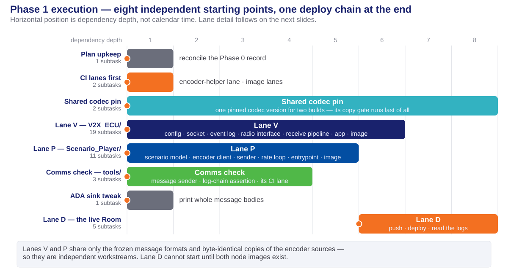
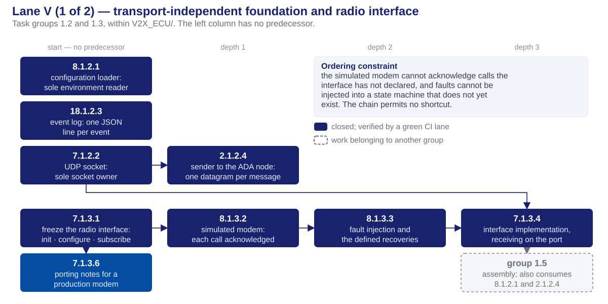
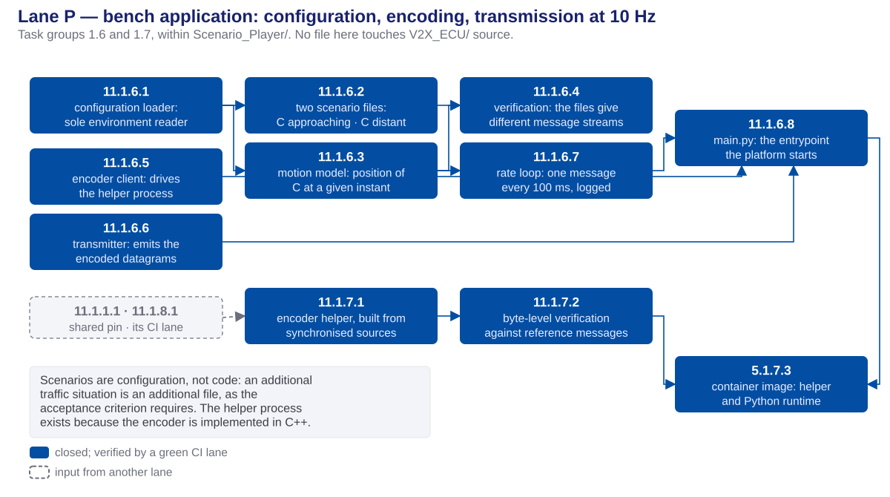
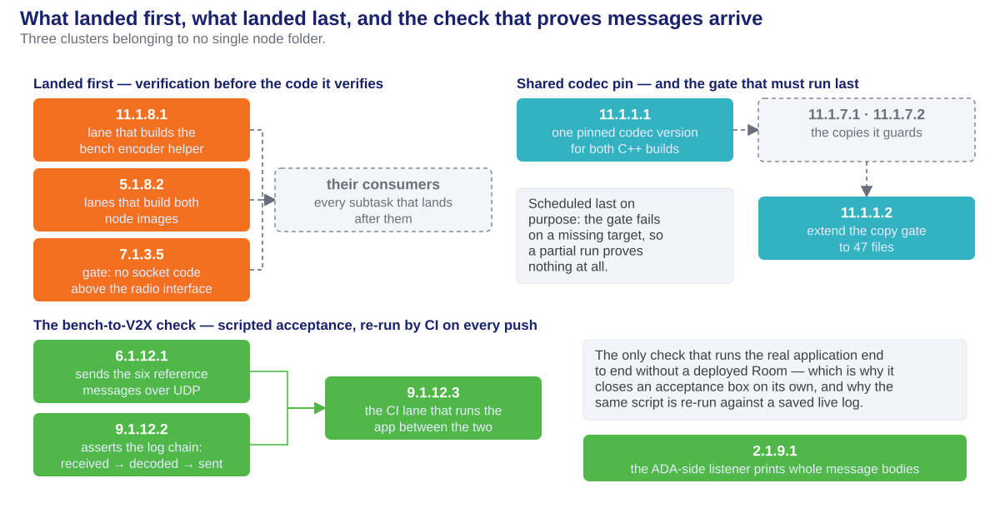
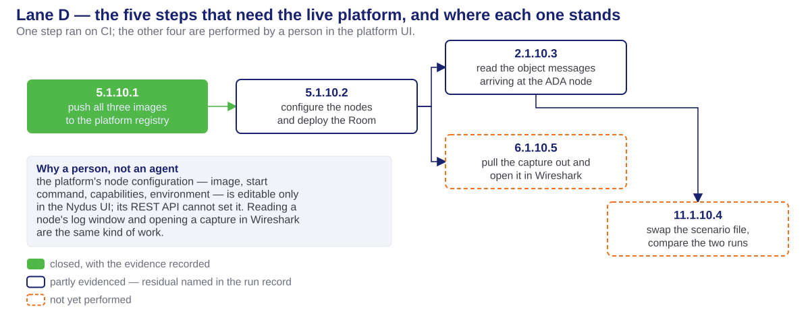

Phase 1 — Task Execution
The work it organizes is Phase 0's contract freeze: phase0-task-execution-deck.html · phase0-design-concepts-deck.html
Source: phase1_tasks.md · phase1-comms-run.md · the two design documents V2X and bench
Table of contents
Work organization
track, execution lane, CI lane, and why Phase 1 has three of them
Work decomposition
the ID scheme, the shape of the phase, and who performed what
Task groups
what each of the twelve delivered
Code delivered
the files Phase 1 put in the repository
Execution order
lane by lane, one diagram at a time
Parallel or sequential
and what forced each
What it proved
the nine acceptance boxes, and how far the evidence reaches
Handoff
what Phase 2 may assume, and the four tasks left for a person
Work organization
What Phase 1 had to do
The bench sends made-up traffic messages; the V2X ECU receives them, decodes them, and hands the result to the ADA ECU as a plain object message. Receive only — the car broadcasts nothing in this phase.
- A phase is a stage of work with a written input and a written acceptance check. Phase 1 could start only because Phase 0 had frozen the message formats; it is finished only when its nine acceptance boxes are ticked.
- Two node folders were built at once: the V2X ECU (C++) and the bench, called the Scenario Player (Python). They share no source code — only the frozen message formats and a byte-for-byte copy of the encoder sources.
- Everything the phase produces is either a running program on a node, or a check that proves the program does what was agreed.
Planning terminology
Three different things get called a lane or a track in this project. They are not interchangeable.
| Term | What it groups | Defined in | Example in Phase 1 |
|---|---|---|---|
| Track | a workstream of whole phases, run by different people at the same time | milestone1.md | the comms track = Phase 1 |
| Phase | one stage with an input list and acceptance criteria | task-planning-conventions.md | Phase 1 |
| Execution lane | subtasks that must run in dependency order, named after the folder they write into | the phase plan's Execution order & parallelism | Lane V = V2X_ECU/ |
| CI lane | one job in the GitHub Actions workflow — it builds, it tests, it passes or fails | phase0-ci.yml | v2x-comms-check |
- Lane letters are phase-local and they collide. Phase 0's Lane D was the bench folder; Phase 1's Lane D is the deploy chain. Always say which phase.
- Lane letters are not an order. Only a stated dependency sequences one lane against another, and a dependency always names an artifact, never a letter.
- Only a CI lane actually runs. A track and an execution lane are planning structure, not programs.
Execution lanes in Phase 1
Named after the folder each writes into, so no two lanes touch the same files.
| Lane | Writes into | Waits on | What it lands |
|---|---|---|---|
| V | V2X_ECU/ | Phase 0's frozen formats | the receive pipeline, the application, the capture scripts, the image |
| P | Scenario_Player/ | Phase 0's formats + the encoder sources | the bench application, its encoder helper, the image |
| Shared | contracts/ | nothing — then everything | one pinned codec version for two builds; the copy-integrity gate |
| CI | .github/workflows/ | nothing | four new verification jobs, landed before the code they verify |
| Comms check | tools/comms_check/ | the event log format | the scripted proof that a sent message is received, decoded and forwarded |
| D | the deployed Room | V and P | push the images, deploy, read the logs, swap the scenario, capture traffic |
- Lanes V and P are logically parallel workstreams. They were run one after another only because every subtask shares a single working folder on one machine.
CI lanes — the verification path, not a safety net
The development machine is Windows with no Docker and no Linux subsystem. Every C++ compile, every container image, every Linux test therefore runs on GitHub Actions.
- Ten jobs in one workflow file. Phase 0 left six; Phase 1 added four:
sp-codec-helper,v2x-comms-check,v2x-ecu-image,scenario-player-image. - **For a C++ subtask, "tests pass" means "the lane is green".** There is nowhere else to run them, so the definition of done points at a run URL.
- Three runs carry the whole phase: 8 lanes green over the phase's code · 10 lanes green adding both node images, which also pushed them to the platform registry · 10 lanes green confirming the deliberately-broken-message tests.
- The image lanes are slow and were expected to fail. Compiling the message library for the platform's ARM processor runs under emulation; both images built inside the 6-hour ceiling on the first attempt, roughly 19 and 20 minutes each.
Work decomposition
The unit of work is a subtask, and its ID says everything
Every task and subtask carries X.Y.Z.W.
| Segment | Reads as | In 9.1.4.4 |
|---|---|---|
X | the requirement served | the requirement to decode incoming messages safely |
Y | the phase | 1 — comms bring-up |
Z | the task group | group 1.4 — the receive pipeline |
W | the subtask | the fourth: compose the four stages, one commit |
The group number is not the requirement number. Group 1.5 holds 8.1.5.1, 6.1.5.2, 6.1.5.3 and 5.1.5.4 — four different requirements in one group, because they jointly deliver one thing: a V2X ECU that runs, captures its own traffic, and ships as an image.
What Phase 1 looked like as a work item
- 12 task groups, 44 subtasks, six lanes. Lane V 19 · lane P 11 · deploy 5 · comms check 3 · shared pin 2 · CI 2 · ADA sink 1 · plan upkeep 1.
- One subtask, one objective, one atomic commit, a build that passes and unit tests that pass. A subtask with no
**Status:**line in the plan file has not started. - Every subtask brief is self-contained — file paths, the message fields it touches, its acceptance check — so the agent implementing it does not need to read the rest of the codebase.
- Nothing was hardcoded. Ports, peers, retry counts, the duplicate-message window, the capture filter and the scenario itself are all configuration the platform injects, which is why the second traffic scenario is a second file rather than a second build.
Who — or what — performed the work
| Performer | Count | What it did |
|---|---|---|
| AI implementation agents | 39 | Wrote every line of application code, its tests and its CI jobs; each made its own single commit |
| The cloud platform (CarSky) | 1 | Planned as an agent-run step: push all three images to the platform registry |
| A person, in the platform UI | 4 | Configure the nodes, deploy, read the node logs, swap the scenario, pull the capture into Wireshark |
- The one platform step was executed by CI instead. The registry key turned out to be present in the repository, so the image lanes pushed the images themselves — the platform agent was never needed, and never was available in any session.
- Human effort is unavoidable for the last four, and not for want of trying: node configuration — image, start command, capabilities, environment variables — is editable only in the platform's web UI. Its REST API cannot set it. Reading a node's log window and opening a capture in Wireshark are the same kind of work.
- All 44 are tracked identically. Only the performer differs; the evidence requirement does not.
Task groups
Groups 1.1 – 1.6 — the shared pin, the V2X ECU, the bench
| Task group | What it delivers, and which lane it serves |
|---|---|
| 1.1 — shared codec pin + copy gate | One pinned version of the message library, used by both C++ builds, and the integrity gate extended from 36 to 47 tracked copies. Shared lane, and it finishes last. |
| 1.2 — V2X ECU foundation | The only piece that reads the environment, the only piece that owns a socket, the event log, and the sender to the ADA node. Lane V, and nothing above it knows about transport. |
| 1.3 — radio interface + stand-in modem | The four-call radio interface a real modem would implement, and a stand-in that acknowledges each call, injects faults on demand and recovers from them. Lane V. |
| 1.4 — the receive pipeline | Decode, reject anything outside the agreed profile, drop repeats, convert to real-world units, forward. Four independently tested stages, then composed. Lane V. |
| 1.5 — application, capture, image | The program itself, the traffic capture running inside its container, the host-side extraction tool, and the deployable image. Lane V. |
| 1.6 — the bench application | Config loading, the two scenario files, the motion model, the encoder client, the sender, the rate loop and the entrypoint. Lane P. |
Groups 1.7 – 1.12 — the encoder, the lanes, the checks, the deploy
| Task group | What it delivers, and which lane it serves |
|---|---|
| 1.7 — the bench's encoder path | A small C++ helper the Python bench talks to, built from byte-identical copies of the V2X ECU's encoder sources, proven against the six reference messages, plus the bench image. Lane P. |
| 1.8 — two new CI jobs | The helper build lane and the two node-image lanes. Landed before their consumers, skipping themselves until the code they verify exists. |
| 1.9 — the ADA-side listener | The stand-in listener on the ADA node prints whole message bodies instead of the first 96 characters — one line changed, so the deploy could actually show the payload. |
| 1.10 — deploy and live verification | Push, configure, deploy, then read the evidence off the running nodes. Lane D — one step on CI, four performed by a person. |
| 1.11 — plan upkeep | Reconciled the Phase 0 acceptance record with what Phase 0 actually closed. Docs only. |
| 1.12 — the bench-to-V2X check | A sender, a log-chain assertion script, and the CI job that runs the real application between them. It is the only check that exercises the whole program without a deployed Room. |
Code delivered
The V2X ECU — a receiving program in eleven modules
| File group | Delivered by | Purpose |
|---|---|---|
src/config/ · src/net/ · src/log/ · src/forward/ | 8.1.2.1 7.1.2.2 18.1.2.3 2.1.2.4 | The foundation: the one environment reader, the one socket owner, the JSON event stream, and the sender to the ADA node |
src/adapter/ · src/stub/ | 7.1.3.1 – 7.1.3.4 | The frozen four-call radio interface and the stand-in modem behind it, with fault injection and defined recoveries |
src/pipeline/ — validator, deduper, builder, composition | 9.1.4.1 – 9.1.4.4 | Decode → check against the profile → drop repeats → convert to metres and m/s → hand on. Each stage tested alone |
src/main.cpp · CMakeLists.txt | 8.1.5.1 | The application: wires every part together, drives start-up, then serves traffic. No logic of its own |
tests/ — 11 suites · tests/fixtures/malformed/ — 10 cases | across all groups, 9.1.4.5 | Including ten deliberately broken messages: six that must be rejected, four that must be tolerated |
capture.sh · tools/extract_pcap.sh · Dockerfile · entrypoint.sh | 6.1.5.2 6.1.5.3 5.1.5.4 | Capture running inside the container, extraction on the host, and the deployable image |
tools/check_transport_imports.py · doc/telux-parity-and-port-plan.md | 7.1.3.5 7.1.3.6 | The gate that keeps sockets below the radio interface, and what changes when a real modem replaces the stand-in |
The bench, the shared pin, and the test equipment
| File group | Delivered by | Purpose |
|---|---|---|
player/config.py · scenarios/default.yaml · scenarios/c-out-of-range.yaml | 11.1.6.1 11.1.6.2 | Configuration loading, and the two traffic situations as data: C approaching, and C parked out of range |
player/scenario.py · player/generator.py | 11.1.6.3 11.1.6.7 | Where C is at any instant, and the loop that turns that into one message every 100 ms |
player/encoder_client.py · player/sender.py · main.py | 11.1.6.5 11.1.6.6 11.1.6.8 | Talking to the encoder helper, putting bytes on the wire, and the entrypoint the platform starts |
codec_helper/ — cpm_encode · Dockerfile | 11.1.7.1 5.1.7.3 | A C++ encoder built from byte-identical copies of the V2X ECU's sources, and the bench image that carries it |
tests/ — 10 suites, 116 local tests + the encoder-golden test | 11.1.6.4 11.1.7.2 | Including the proof that the two scenario files produce different message streams, and that the helper's bytes match the reference messages exactly |
contracts/vanetza-pin.cmake · contracts/sync-manifest.json | 11.1.1.1 11.1.1.2 | One pinned library version for both builds; the gate now covers 47 byte-identical copies |
tools/comms_check/ · tools/netcheck/netcheck.py | 6.1.12.1 9.1.12.2 2.1.9.1 | Test equipment: the message sender, the log-chain assertion, and the listener that prints whole bodies |
Execution order
Eight independent starting points

- Horizontal position is dependency depth — how far a piece of work sits from the start of the phase — not calendar time.
Lane V, part 1 — the foundation and the radio interface

Lane V, part 2 — the pipeline, the program, the image

Lane P — the bench

What landed first, what landed last, and the check in between

Lane D — the five steps that need the live platform

- The Room was deployed and messages did arrive. What is still missing is narrower than "the deploy": per-node status badges, a scripted check over a saved log, the second scenario, and a capture file.
Parallel or sequential
What ran beside what, and what forced the order
| Relationship | What it covers | What forces it |
|---|---|---|
| Parallel — the two node lanes | all of V2X_ECU/ against all of Scenario_Player/ | Disjoint folders. They meet only at frozen message formats and at byte-identical copies of the encoder sources |
| Parallel — inside the foundation | the config reader, the socket, the event log | Different files, no shared type; only the forwarder needs the socket |
| Parallel — inside the pipeline | validator, deduper, builder | None of the three calls another; the composition is what needs all of them |
| Sequential — the radio chain | interface → stand-in modem → faults → live receive thread | Each step compiles against the one before it |
| Sequential — CI before code | the three verification jobs before the subtasks they verify | A subtask whose acceptance check is "the lane is green" needs the lane to exist on the day it lands |
| Sequential — last of all | the copy-integrity gate, after every new copy exists | The gate fails on a missing target, so running it early would prove nothing |
| Sequential — the deploy chain | push → configure and deploy → read the logs → swap the scenario | You cannot deploy an image that was never pushed, or read logs from a node that is not running |
What it proved
The nine acceptance boxes
| Acceptance box | State | What the evidence actually is |
|---|---|---|
| No socket code above the radio interface | closed | The gate runs on every push; the porting notes are committed |
| Start-up calls acknowledged; every fault recovers | closed | Unit tests and the end-to-end CI job — not a deployed node |
| Reference messages decode; broken ones rejected | closed | Through the real decoder: 6 rejected, 4 correctly tolerated, no crashes |
| A bench message is received, decoded and forwarded | closed | The v2x-comms-check job, which fails if any link is removed |
| Both images build for the platform, and the Room deploys | partly | Built, pushed, pulled and run — per-node status badges unconfirmed |
| Traffic captured on the bridge network | partly | Capture runs and shows both directions; no file pulled off yet |
| Different scenarios give different message streams | partly | Proven in the model and in the bytes; the live swap is not done |
| Object messages at the ADA ECU are not constants | partly | Seen live and checked; the scripted check on a saved log is pending |
| Demo: the capture opened in Wireshark | open | Needs a log from a Room that ran long enough to rotate a file |
How far the evidence reaches
A green pipeline and a running node prove different things. The plan says which, per box, and so does this deck.
- Closed by machine, on every push: the import gate, the fault recoveries, the broken-message tests, and the whole received → decoded → forwarded chain. These re-prove themselves on every commit.
- Seen once, on a live Room: object messages arriving at the ADA node with
distancefalling exactly 0.25 m per message at 10 messages a second — precisely the 2.5 m/s closing speed in the scenario file. The derived distance matcheshypot(50.25, 1.2)to every printed digit, so it is genuinely computed from the decoded position rather than copied through. - Measured as a side effect: the V2X ECU's whole decode-to-forward path took 142–151 µs, consistently, across every message pair sampled at the capture point.
- Not proven at all yet: anything needing a saved log export — the scripted log check, the second scenario, and the capture file.
Handoff
What Phase 2 may assume
Phase 2 builds the ADA ECU's track store and admission logic on mock input. Everything below is a Phase 1 deliverable it does not have to re-prove.
- Real object messages arrive at the ADA node. Their shape, units and field values were checked against the running bench, so Phase 2 can build against a format that has already been observed rather than only agreed.
- The platform is a known quantity. Images build for its processor, push to its registry and run; the node configuration gotchas — the start command is space-separated, not a JSON array — are written down in the run record.
- The event stream exists. Every stage of the receive path emits one JSON line with running counters; the later phases' reconstruction of a whole run starts from this format.
- Ten CI jobs verify the tree on every push, four of them added by this phase, and the copy-integrity gate now covers 47 files.
- Test equipment is reusable. The message sender, the log-chain assertion and the listener that prints whole bodies are all node-independent.
What stays open — four tasks, all for a person
40 of the 44 subtasks are closed. Nothing that remains is agent work, CI work, or new code: every one of these is done by hand in the platform UI, because node configuration and log reading have no API.
| Task | What a person has to do |
|---|---|
5.1.10.2 | Confirm per-node Running badges and a restart count of zero in the Deployment Viewer — not the summary header, which read "Pending — 0/0 nodes ready" while traffic flowed normally |
2.1.10.3 | Capture the start-up call sequence from the node log — it prints once at start and scrolled away — and run the log-chain check over a saved log export |
11.1.10.4 | Point the bench at the second scenario file, redeploy, and compare the two log sets |
6.1.10.5 | Save a log that contains a capture block, run the extraction script, and open the result in Wireshark |
- One deploy session closes all four. The last three read the same node log, so one restart plus one long enough log download serves all of them — and the capture block only appears once the Room has run a full rotation period.
- Two decisions are also a person's, though neither is a task: whether the phase's retry and duplicate-window defaults stand as chosen, and whether "the team app launches on the display node" belongs to this phase at all — no design document covers it.
Thank you!
Phase 1 — Task Execution · Milestone 1 · FPT Hackathon 2026